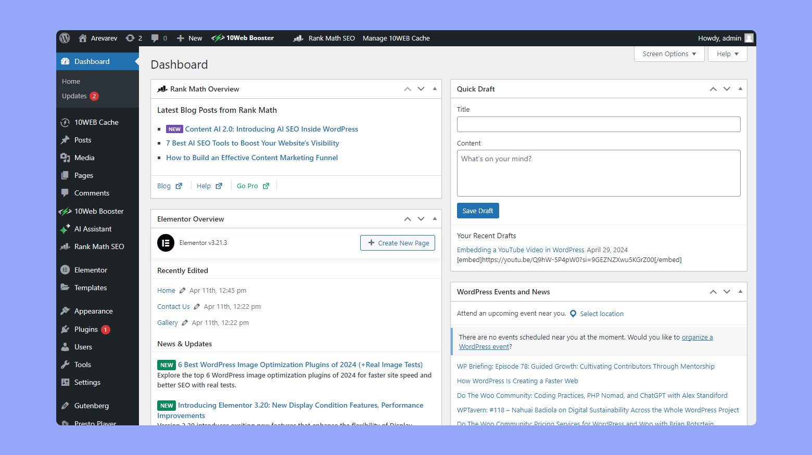

Navigate this presentation:
Use the arrows (bottom right corner of the screen) or scroll on your cellphone. Go into detail in each section browsing upwards & downwards; pass from one section to the other going left/right.
Go into detail in each section browsing upwards & downwards; pass from one section to the other going left/right.
Ok, lets try: press the down arrow or scroll down to the next slide...


Most people use the internet through mainstream platforms such as Whatsapp, Google, Instagram, Youtube, Facebook, TikTok, etc.
These big tech companies "offer" their services apparently for "free": well, actually, the small print says in exchange for our data which is used to develop technology based on artificial intelligence and machine learning, invasive marketing, databases with all types of personal information.
And why should this worry us? These corporations collaborate with governments, entities of control and authority, private companies, and sell their products to the best bidder including right wing and poltical parties.
Beyond the fact that we might or might not have the feeling and/or certainty that we are under surveillance for our political activity, we are feeding a system that discriminates and causes a lot of harm.
Since the beginning of internet, there have been groups of people that create technology based on other values and principles designed to respect our privacy and freedom.
The libre/free software and culture ecosystem is diverse: from big organizations like Ubuntu, Mozilla (Firefox) and Wordpress, to small projects of one or two people.
Libre/free software gives us the choice to:
obtain clear and transparent information about the tech tools we use (how does it work? for what purpose?)
self/collectively manage them (for example, hosting our platform on our server)
in some cases, create our own version (grabbing the code and modifying it to meet our needs and interests).
But, if its that great, why aren't these alternatives more well known and implemented?
Good question! Well, mainstream big tech has a lot of power, basically...
they've gained a critical mass of users: migrating to alternate spaces and tools can make us feel that we are going to miss out and isolate ourselves.
they seem to be "easier to use" because we tend to be more exposed to them and more people around us know how to use them and potentially help us out.
in some aspects they "work really well" and offer loads of features because they have hundreds and sometimes thousands of workers (most of them exploited by the way) and huge budgets.
they can offer their services for "free" because they profit from user data.
However, alternative free/libre platforms...
imply a learning curve, reading documentation, seeking help; in other words, time (which we don't always have or don't want to give).
function differently and, sometimes, offer less features such as storage space or speed.
some ask for a money-based contribution to sustain the project or require covering your own web hosting and maintenance.
So yes, it implies change: a change of ways, a change of life... Like when we want to cultivate a more direct relationship with what we eat.
A cooperative doesn't aspire to be a multinational. A libre/free platform doesn't aspire to be Whatsapp or Instagram.
Thanks to the persistence and resistence of these projects, we count with a vast ecosystem of options, most of which relatively accesible with adequate help and support.
There are groups and people that are invested and have experience in providing accompaniment and guidance in transforming our relationship with technology and migrating to options more aligned with our values and needs.
People like us.
But...who are you?
I'm Shubha ...
I'm Nadège and I've been walking along collectives, organizations and grassroot movements for the last 15 years. I've been part of different transhackfeminist tech projects and networks, including an infrastructure cooperative called Kéfir which served grassroot communities and activist groups for 6 years.
You can see my work at: https://nadege.es
A key aspect of a feminist approach to accompaniments is to question the paternalistic “Don’t worry; I’ll do it for you”. In free/libre software and culture contexts, you can come across this prophetic attitude of convincing people of the “best tool”.
“Demistify” the concept of technology, create environments where we can make mistakes, tickle our playful and pleasurable side, offer different paths for different people and groups.
And, at the same time, understand and acknowledge when we don’t have the time nor the capacity; it’s important to seek help, delegate in others because we are already juggling between our work, activism, relationships, personal space, self care…
Now let's see some examples of alternative platforms.

The concept of "digital neighborhoods", created by Liliana Zaragoza Cano (Lili_Anaz), highlights the interconections and relationships that emerge when we inhabit technology.
Because through the act of creating neighborhoods we feel that we have the possibility and capacity to create meaningful spaces for our communities: from the language we use and the visual design choices to the behind-the-scenes decision making (what platforms and features do we need? who do we trust to handle our private data?).


Web sites: spaces-bridges to share inform-a(c)tion
They can be designed and developed to fulfill specific goals such as:- Blogs: storytelling
- Repositories: organized information
- Knowledge building: online learning exchange
Wordpress is probably one of the most well known and implemented free/libre software platforms. You can install it on your own server, sign up to an existing platform and, through plugins (additional programs) configure lots of different features.


Communication
Alternatives to Gmail, Zoom, Whatsapp, Mailchimp, Facebook, etc.- Email accounts
- Mailing lists
- Newsletters
- Chat groups
- Videoconference
Since the beginning of internet, before Whatsapp, Instagram, Zoom, Slack, Microsoft and other big tech mainstream corporations, folk would self-manage their own means of communication. There are plenty of tools like Mailman, Roundcube, Postfix, Mailtrain, Thunderbird, Mattermost, Jitsi Meet, Nextcloud and Signal.


Surveys and forms
Alternativas a Google Drive.Existen herramientas confiables como Limesurvey

Flujos de trabajo: espacios de trabajo colectivo.
Alternativas a Google Drive, Trello, etc.- Archivos & carpetas
- Edición de documentos en línea
- Calendarios & gestión de actividades
- Gestor de proyectos & listas de tareas
 Nextcloud es un proyecto de largo recorrido que ofrece muchas funcionalidades nativas, aparte de otras que pueden agregarse a través de aplicaciones. Se puede acceder tanto desde ordenador como dispositivos móviles.
Nextcloud es un proyecto de largo recorrido que ofrece muchas funcionalidades nativas, aparte de otras que pueden agregarse a través de aplicaciones. Se puede acceder tanto desde ordenador como dispositivos móviles.

Gobernanza colectiva
Alternativa a Whatsapp- Foros de discusiones e intercambio de recursos y procesos
- Herramientas de toma de decisiones: por consentimiento, consenso, consejo
- Grupos y comisiones de trabajo: espacios de organización y discusión por subgrupos
 Discourse es otro proyecto de amplia trayectoria. Ofrece la posibilidad de crear foros públicos o privados con canales y subcanales, organizados por categorías. Se puede acceder tanto desde ordenador como dispositivos móviles.
Discourse es otro proyecto de amplia trayectoria. Ofrece la posibilidad de crear foros públicos o privados con canales y subcanales, organizados por categorías. Se puede acceder tanto desde ordenador como dispositivos móviles.
Espero que esta presentación amplie tu imaginario sobre alternativas más seguras, feministas y autónomas en internet. No dudes en escribirme a contacta@nadege.es.
Gracias por tu tiempo ;)